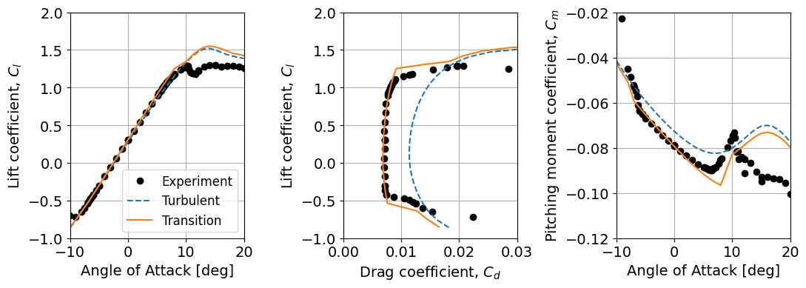

Postprocessing for DU00-W-212: Coefficients of lift and drag
Angle of attack sweep
import yaml
import matplotlib.pyplot as plt
import numpy as np
size=14
params = {'legend.fontsize': 'large',
'axes.labelsize': size,
'axes.titlesize': size,
'xtick.labelsize': size,
'ytick.labelsize': size}
plt.rcParams.update(params)
# For website workflow
path_prefix = '../../nalu-wind/2D_airfoil_Transition/DU00-W-212/figures_and_scripts/'
re_list=[3]
n_re=len(re_list)
for i in range(n_re):
re = re_list[i]
file =path_prefix+'../reference_data/exp_du00w212_re{:02d}M.yaml'.format(int(re))
with open(file, "r") as data:
clcd=yaml.safe_load(data)
with open(path_prefix+'../performance/du00w212_F_rey{:08d}.yaml'.format(int(re*1e6)), "r") as data3:
cfd_trans=yaml.safe_load(data3)
with open(path_prefix+'../performance/du00w212_F_rey{:08d}_turb.yaml'.format(int(re*1e6)), "r") as data1:
cfd_turb=yaml.safe_load(data1)
plt.figure(figsize=(11,4))
plt.subplot(1, 3, 1)
plt.plot(clcd['DU00W212']['aoa'],clcd['DU00W212']['cl'],'ko')
plt.plot(cfd_turb['du00w212_F']['aoa'],cfd_turb['du00w212_F']['cl'],'--')
plt.plot(cfd_trans['du00w212_F']['aoa'],cfd_trans['du00w212_F']['cl'])
plt.xlabel('Angle of Attack [deg]')
plt.xlim([-10, 20])
plt.ylim([-1, 2])
plt.ylabel('Lift coefficient, $C_{l}$')
plt.grid()
plt.tight_layout()
plt.legend(['Experiment','Turbulent','Transition'])
plt.subplot(1, 3, 2)
plt.plot(clcd['DU00W212']['cd'],clcd['DU00W212']['cl'],'ko')
plt.plot(cfd_turb['du00w212_F']['cd'],cfd_turb['du00w212_F']['cl'],'--')
plt.plot(cfd_trans['du00w212_F']['cd'],cfd_trans['du00w212_F']['cl'])
plt.xlabel('Drag coefficient, $C_{d}$')
plt.ylabel('Lift coefficient, $C_{l}$')
plt.xlim([0.0,0.03])
plt.ylim([-1, 2])
plt.grid()
plt.tight_layout()
plt.subplot(1, 3, 3)
plt.plot(clcd['DU00W212']['aoa'],clcd['DU00W212']['cm'],'ko')
plt.plot(cfd_turb['du00w212_F']['aoa'],np.array(cfd_turb['du00w212_F']['cm'])*-1,'--')
plt.plot(cfd_trans['du00w212_F']['aoa'],np.array(cfd_trans['du00w212_F']['cm'])*-1)
plt.xlabel('Angle of Attack [deg]')
plt.ylabel('Pitching moment coefficient, $C_{m}$')
plt.xlim([-10, 20])
plt.ylim([-0.12, -0.02])
plt.grid()
plt.tight_layout()
# plt.savefig("du_rey_%dM.png"%re,dpi=300)
plt.show()
